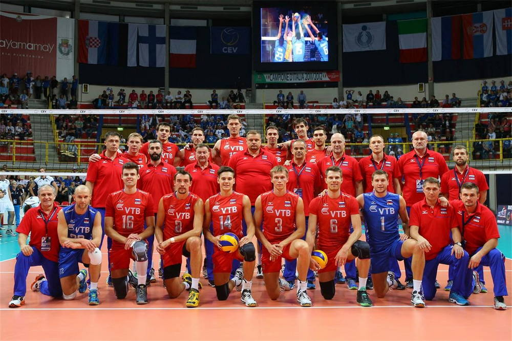

|  | 29 марта 2013 года новым главным тренером сборной России был назначен Андрей Воронков. 45-летний наставник новосибирского «Локомотива» сменил у руля главной команды Владимира Алекно, под руководством которого она завоевала золото на Олимпийских играх в Лондоне. 20 мая на базе в подмосковном Новогорске сборная России начала подготовку к новому сезону, 1 и 2 июня встретилась в Москве в товарищеских матчах со сборной Бразилии[1], а 4 июня вылетела в Калининград на стартовые матчи Мировой лиги.По сравнению с прошлым сезоном команда начинала выступления в Мировой лиге в сильно обновлённом составе — объявил о завершении карьеры в сборной Сергей Тетюхин, по индивидуальным программам восстанавливались после клубного сезона его партнёры по золотой команде Максим Михайлов, Александр Бутько, Тарас Хтей, Юрий Бережко и остававшийся вне игры после Олимпиады в Лондоне Александр Волков, не получили вызова от Воронкова либеро Алексей Обмочаев и Александр Соколов[2][3]. Среди игроков, ранее уже выступавших за сборную и закрепившихся в команде образца 2013 года, необходимо отметить доигровщиков Евгения Сивожелеза и Алексея Спиридонова, связующего Сергея Макарова и либеро Алексея Вербова, а дебютантами в официальных матчах сборной стали блокирующие Андрей Ащев и Артём Вольвич, связующий Сергей Антипкин, диагональный Николай Павлов и доигровщик Илья Жилин. После первых игр Мировой лиги с Ираном Андрей Воронков отпустил Сергея Антипкина в студенческую сборную для подготовке к выступлению на Универсиаде в Казани и вызвал в команду Сергея Гранкина. Тогда же из-за травмы выбыл на шесть матчей Дмитрий Мусэрский. |